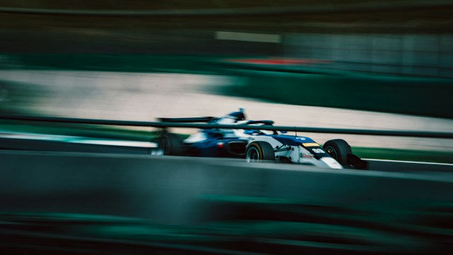

F1 Lenovo Gran Premio de España 2027

El F1 Lenovo Gran Premio de España 2027 se celebrará del 10
al 12 de septiembre de 2027 en el circuito Madring, lo que
supone el segundo año consecutivo del Gran Premio de España
en Madrid.
Tras el debut de Madring en la F1 en 2026, la edición de
2027 contará con un trazado optimizado, diseñado para
resolver los problemas de adelantamiento que quedaron al
descubierto en la primera edición.
El circuito Madring
Madring es un circuito híbrido de 5,4 kilómetros situado en
la zona del recinto ferial IFEMA de Madrid, con 22 curvas.
Su característica más destacada es La Monumental, una curva
peraltada de 547 metros de longitud y un 24% de inclinación,
lo que la convierte en la curva peraltada más pronunciada
del calendario actual de la F1.
El diseño de esta curva está inspirado en la arquitectura de las plazas de toros
tradicionales españolas y es el tramo más espectacular de todo el trazado
Cambios clave para 2027
- Modificación de la curva 5: se ampliará la zona de frenada para facilitar los adelantamientos.
- Modificación de la curva 13: se creará más espacio para los adelantamientos en paralelo.
- Modificación de la curva 20: se rediseñará el trazado para mejorar las oportunidades de overtaking.
- Objetivo general: ampliar las zonas de frenada y crear más espacio para los adelantamientos en paralelo, respondiendo a las recomendaciones de la FIA.
Aunque la primera edición de 2026 mostró el desafío que supone el circuito en clasificación, en carrera solo se produjeron 4 adelantamientos, incluso menos que en Mónaco, lo que generó amplias críticas por parte de pilotos y aficionados. El director de la prueba, Luís García Abad, ha confirmado que la FIA ya ha proporcionado recomendaciones concretas para modificar el trazado, y los organizadores introducirán cambios antes de la carrera de 2027.
"Si el año que viene todavía no está resuelto, es un fracaso. Es un contrato de diez años; no puede seguir así en el segundo año."
Fechas del F1 Lenovo Gran Premio de España 2027
El evento se celebrará en el circuito Madring de Madrid durante el fin de semana del 10 al 12 de septiembre de 2027, y será la decimoquinta prueba del calendario de F1 de esa temporada.
- 10 de septiembre de 2027 — Primer día de actividad en pista (viernes, entrenamientos libres)
- 11 de septiembre de 2027 — Segundo día de actividad (sábado, clasificación)
- 12 de septiembre de 2027 — Día de la carrera (domingo)
Campeones recientes
| Temporada | Piloto | Escudería | Puntos |
|---|---|---|---|
| 2021 | Max Verstappen | Red Bull Racing | 395,5 |
| 2022 | Max Verstappen | Red Bull Racing | 454 |
| 2023 | Max Verstappen | Red Bull Racing | 575 |
| 2024 | Max Verstappen | Red Bull Racing | 437 |
| 2025 | Lando Norris | McLaren | 423 |
Enlaces de interés
Consulta información oficial y actualizada en los siguientes sitios: